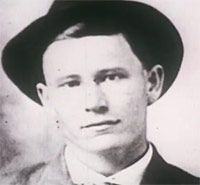
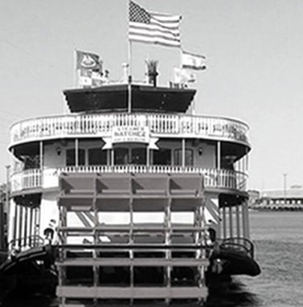
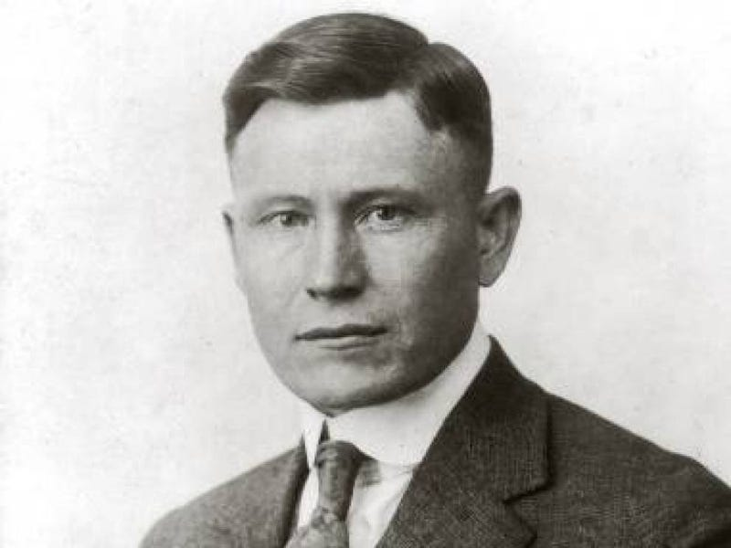
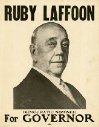
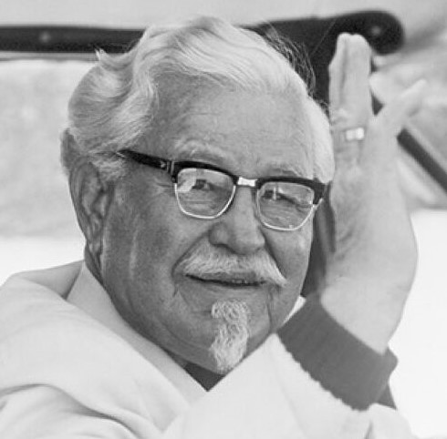
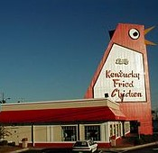
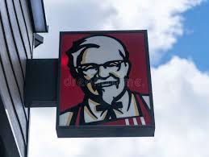
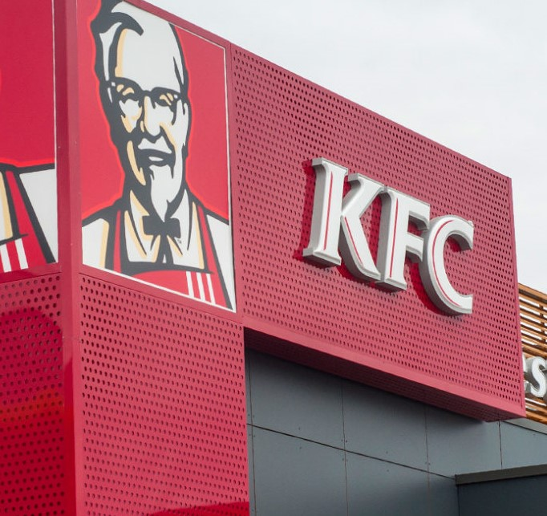
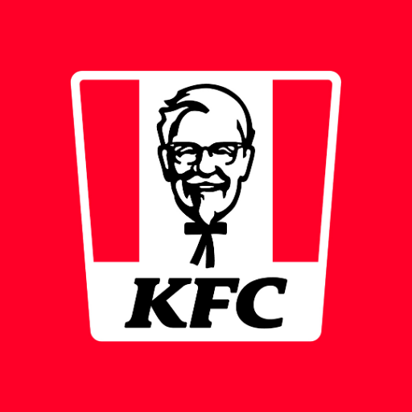

Harland David Sanders nació el 9 de septiembre
de 1890, desde que era pequeño tuvo que meterse a trabajar debido a que su familia no tenía
los suficientes recursos, empezó a cocinar desde pequeño porque tenía que preparar alimentos a
dos hermanos menores.
 
Cuando tenia 15 años se alistó al ejercito de Estados Unidos donde se fué a Cuba donde realizó su servicio.
Cuando regresó a su país empezó a tener diferentes trabajos pero niguno era constante, tales como
marino mercante, agricultor, bombero, etc.

Tiempo después en una estación de serivicio que era muy frecuentado por transportistas deicidió hacer otro serivicio
para ganar más dinero, este producto era la cómida, su pollo frito empezó a ganar mucha fama que hasta el
gobernador del estado, Ruby Laffoon, le otorgó la distinción de coronel en la ciudad.Tiempo después su éxito
se vino abajo cuando se construyó una carretera y los clientes dejaron de ir.

Cuando tenía más de 60 años decidió comenzar una franquicia con su receta de pollo frito,
viajando y dandolo a conocer en diferentes locales y así fué como se fundó el primer restaurante Kentucky
Fried Chicken que abrió en 1952 en salt Lake City, Utah.

En 1964 tuvo 600 franquicias KFC registradas, y decidió vender la compañia a un inversor por 2 millones de dolares
y un salario vitalicio de 40mil dolares al año, pero permaneció como embajador e imagen de la marca.

El 16 de diciembre de 1980 fué la fecha de su fallecimiento causada por una grave leucemia a la edad de
90 años, actualmente KFC es una de las cadenas más importantes alrededor del mundo.